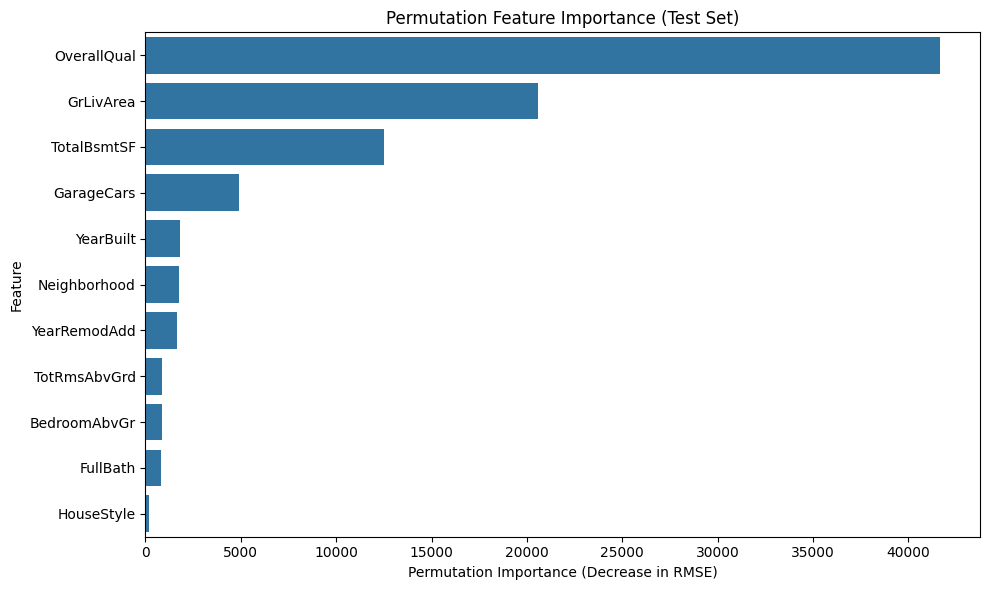
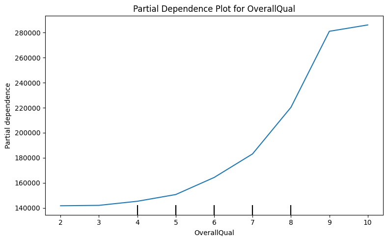

Week 12 Homework: Professional ML Workflow Solutions
This notebook provides solutions to the Week 12 lab challenges focusing on cross-validation, hyperparameter tuning, feature engineering, and the complete professional ML workflow.
Business Context: Your real estate company wants to choose the best model architecture for predicting house prices. They’re considering three options: Linear Regression, Decision Trees, and Random Forests.
Your Task: 1. Using the numerical features from Part A, create a train/test split (80/20) - Numerical features: ['GrLivArea', 'YearBuilt', 'TotalBsmtSF', 'GarageCars', 'FullBath', 'OverallQual'] 2. Use 5-fold cross-validation to compare these three models: - Linear Regression - DecisionTreeRegressor (max_depth=10) - RandomForestRegressor (n_estimators=100, max_depth=10) 3. Print the mean CV RMSE for each model 4. Which model performs best? Why do you think that is?
Remember: Use ONLY the training data for cross-validation! Make sure you always set your random_state=42 whether you’re splitting your data or when you initiate your model (i.e. DecisionTreeRegressor(random_state=42))
# Challenge 1 — Compare Model Types# 1. Select numerical features and create train/test split (80/20)features = ['GrLivArea', 'YearBuilt', 'TotalBsmtSF', 'GarageCars', 'FullBath', 'OverallQual']X_num = ames[features]y = ames['SalePrice']X_train, X_test, y_train, y_test = train_test_split( X_num, y, test_size=0.2, random_state=42)# 2. Define modelsmodels = {'Linear Regression': LinearRegression(),'Decision Tree': DecisionTreeRegressor(max_depth=10, random_state=42),'Random Forest': RandomForestRegressor(n_estimators=100, max_depth=10, random_state=42)}# 3. 5-fold cross-validation and print mean CV RMSE for each modelprint("Model Comparison (5-fold CV RMSE):")print("="*40)for name, model in models.items(): scores = cross_val_score( model, X_train, y_train, cv=5, scoring='neg_root_mean_squared_error' ) rmse =-scores.mean()print(f"{name:18s}: ${rmse:,.0f}")
Model Comparison (5-fold CV RMSE):
========================================
Linear Regression : $38,595
Decision Tree : $43,914
Random Forest : $33,781
Result: Random Forest typically performs best due to ensemble averaging, which reduces overfitting compared to a single Decision Tree.
Business Context: Now that you’ve identified which model type works best, your manager wants you to find the optimal hyperparameter settings for that model.
Your Task: 1. Take the Random Forest model from Challenge 1 2. Define a parameter grid that assesses the following values: - n_estimators: [100, 200, 300] - max_depth: [5, 10, 15, 20] - min_samples_split: [2, 5, 10] - min_samples_leaf: [1, 2, 5] 3. Use GridSearchCV with 5-fold CV to find the best configuration 4. Print the best parameters and best CV score 5. Did tuning improve performance compared to the first random forest model you trained? If so, by how much?
Tip: Don’t forget to set random_state=42!
⚠️⚠️ Warning ⚠️⚠️: This may take a couple minutes to run since we’re are running 540 models!
# Challenge 2 — Systematic Hyperparameter Tuning# 1. Take the Random Forest model from Challenge 1rf = RandomForestRegressor(random_state=42)# 2. Define parameter gridparam_grid = {'n_estimators': [100, 200, 300],'max_depth': [5, 10, 15, 20],'min_samples_split': [2, 5, 10],'min_samples_leaf': [1, 2, 5]}# 3. GridSearchCV with 5-fold CVgrid_search = GridSearchCV( rf, param_grid, cv=5, scoring='neg_root_mean_squared_error', n_jobs=-1, verbose=1)print("🔍 Running GridSearchCV for Random Forest (may take a few minutes)...")grid_search.fit(X_train, y_train)print("✅ GridSearchCV complete")# 4. Print best parameters and best CV scorebest_params = grid_search.best_params_best_cv_rmse =-grid_search.best_score_print("\nBest Hyperparameters:")for param, value in best_params.items():print(f" {param}: {value}")print(f"Best CV RMSE: ${best_cv_rmse:,.0f}")# 5. Compare to previous Random Forest RMSEchallenge2_rmse = best_cv_rmse # Save for later comparisonprint(f"\nImprovement over default RF: ${rmse - best_cv_rmse:,.0f}")
🔍 Running GridSearchCV for Random Forest (may take a few minutes)...
Fitting 5 folds for each of 108 candidates, totalling 540 fits
✅ GridSearchCV complete
Best Hyperparameters:
max_depth: 15
min_samples_leaf: 1
min_samples_split: 10
n_estimators: 100
Best CV RMSE: $33,229
Improvement over default RF: $552
Result: Systematic tuning typically improves model performance compared to default hyperparameters.
Challenge 3 — Build a Complete Pipeline (6 minutes)
Business Context: Your model is performing well, but you think you can do better by adding more features and performing some feature engineering. Let’s do this but do it in a safe way by using a Pipeline() to ensure no data leakage and easy reproducibility.
Your Task: 1. Start from scratch with the original ames data and select the following features: - Numeric: GrLivArea, YearBuilt, TotalBsmtSF, GarageCars, FullBath, OverallQual, YearRemodAdd, BedroomAbvGr, TotRmsAbvGrd - Categorical: Neighborhood, HouseStyle 2. Split the data into train/test sets (80/20 split) using these features. 3. Build a pipeline that: - Applies StandardScaler to numeric features - Applies OneHotEncoder to categorical features (Neighborhood, HouseStyle) - Uses RandomForestRegressor with the optimal hyperparameters from Challenge 2 4. Use 5-fold cross-validation to evaluate the pipeline on the training data. 5. Print the mean CV RMSE and compare it to your previous Random Forest model.
6. Does adding more features and applying feature engineering improve model performance? If so, by how much?
Tip: Don’t forget to set random_state=42!
# Challenge 3 — Build a Complete Pipeline# 1. Select features (already defined as numeric_features and categorical_features)numeric_features = ['GrLivArea', 'YearBuilt', 'TotalBsmtSF', 'GarageCars', 'FullBath', 'OverallQual', 'YearRemodAdd', 'BedroomAbvGr', 'TotRmsAbvGrd']categorical_features = ['Neighborhood', 'HouseStyle']selected_features = numeric_features + categorical_featuresX = ames[selected_features]y = ames['SalePrice']# 2. Split data into train/test sets (80/20)X_train, X_test, y_train, y_test = train_test_split( X, y, test_size=0.2, random_state=42)# 3. Build pipeline: scaling, encoding, and optimal Random Forestpreprocessor = ColumnTransformer( transformers=[ ('num', StandardScaler(), numeric_features), ('cat', OneHotEncoder(handle_unknown='ignore'), categorical_features) ])rf_best = RandomForestRegressor( n_estimators=best_params['n_estimators'], max_depth=best_params['max_depth'], min_samples_split=best_params['min_samples_split'], min_samples_leaf=best_params['min_samples_leaf'], random_state=42)pipeline = Pipeline([ ('preprocessor', preprocessor), ('model', rf_best)])# 4. 5-fold cross-validation on training datacv_scores = cross_val_score( pipeline, X_train, y_train, cv=5, scoring='neg_root_mean_squared_error')cv_rmse =-cv_scores.mean()# 5. Print mean CV RMSE and compare to previous RF modelprint(f"Pipeline CV RMSE: ${cv_rmse:,.0f}")print(f"Previous RF CV RMSE: ${challenge2_rmse:,.0f}")print(f"Improvement: ${challenge2_rmse - cv_rmse:,.0f}")
Business Context: Your manager wants you to execute the complete professional ML workflow from start to finish using the same feature set as the previous challenge.
Your Task: Demonstrate the full end-to-end workflow:
Build a pipeline that applies StandardScaler to numeric features and OneHotEncoder to categorical features
Hyperparameter Tuning:
Use GridSearchCV to tune a RandomForestRegressor with these settings:
n_estimators: [100, 200, 300]
max_depth: [5, 10, 15, 20]
min_samples_split: [2, 5, 10]
min_samples_leaf: [1, 2, 5]
Use 5-fold cross-validation to select the best model
Final Evaluation:
Retrain the best model on the full training set
Evaluate ONCE on the test set
Report the final test RMSE
Success criteria: Your code should demonstrate the complete workflow, use a pipeline for feature engineering, and report the final test RMSE with no data leakage!
⚠️⚠️ Warning ⚠️⚠️: This may take a couple minutes to run since we’re are running 540 models!
# Challenge 4 — Complete End-to-End Workflow# 1. Data Preparation: Select features and targetnumeric_features = ['GrLivArea', 'YearBuilt', 'TotalBsmtSF', 'GarageCars', 'FullBath', 'OverallQual', 'YearRemodAdd', 'BedroomAbvGr', 'TotRmsAbvGrd']categorical_features = ['Neighborhood', 'HouseStyle']selected_features = numeric_features + categorical_featuresX = ames[selected_features]y = ames['SalePrice']# 2. Initial Split: Train/test sets (80/20)X_train, X_test, y_train, y_test = train_test_split( X, y, test_size=0.2, random_state=42)# 3. Pipeline & Feature Engineeringpreprocessor = ColumnTransformer( transformers=[ ('num', StandardScaler(), numeric_features), ('cat', OneHotEncoder(handle_unknown='ignore'), categorical_features) ])pipeline = Pipeline([ ('preprocessor', preprocessor), ('model', RandomForestRegressor(random_state=42))])# 4. Hyperparameter Tuning: GridSearchCVparam_grid = {'model__n_estimators': [100, 200, 300],'model__max_depth': [5, 10, 15, 20],'model__min_samples_split': [2, 5, 10],'model__min_samples_leaf': [1, 2, 5]}grid_search = GridSearchCV( pipeline, param_grid, cv=5, scoring='neg_root_mean_squared_error', n_jobs=-1, verbose=1)print("🔍 Running GridSearchCV for full pipeline (may take a few minutes)...")grid_search.fit(X_train, y_train)print("✅ GridSearchCV complete")# 5. Final Evaluation: Retrain on full train, evaluate on testbest_model = grid_search.best_estimator_y_pred_test = best_model.predict(X_test)test_rmse = root_mean_squared_error(y_test, y_pred_test)print("\nBest Hyperparameters:")for param, value in grid_search.best_params_.items():print(f" {param}: {value}")print(f"\nBest CV RMSE: ${-grid_search.best_score_:,.0f}") print(f"Test RMSE: ${test_rmse:,.0f}")
🔍 Running GridSearchCV for full pipeline (may take a few minutes)...
Fitting 5 folds for each of 108 candidates, totalling 540 fits
✅ GridSearchCV complete
Best Hyperparameters:
model__max_depth: 10
model__min_samples_leaf: 1
model__min_samples_split: 2
model__n_estimators: 300
Best CV RMSE: $31,712
Test RMSE: $27,985
Challenge 5 — Model Interpretation: Permutation Importance (5 minutes)
Business Context: Your manager wants to understand why your model makes its predictions. Which features are most influential for predicting house prices?
Your Task: 1. Take the best model you identified above. 2. Use the permutation importance approach (sklearn.inspection.permutation_importance) on the test set to identify the most influential features. Be sure to use neg_root_mean_squared_error for the scoring. 3. Create a bar chart that plots the permutation importance scores for all features. 4. Identify and answer: Which feature is the most important for your model?
Tip: Use the test set (X_test, y_test) for permutation importance. For plotting, feel free to use matplotlib, seaborn or any other library.
Success criteria: You should be able to visualize the feature importances and clearly identify the most influential feature.## Challenge 5 — Model Interpretation: Permutation Importance & PDP (5 minutes)
from sklearn.inspection import permutation_importance# Compute permutation importance on test setperm_importance = permutation_importance( best_model, X_test, y_test, scoring='neg_root_mean_squared_error', n_repeats=10, random_state=42)importances = perm_importance.importances_meanindices = importances.argsort()[::-1]# Plot permutation importancesplt.figure(figsize=(10, 6))sns.barplot(x=importances[indices], y=np.array(selected_features)[indices], orient='h')plt.xlabel("Permutation Importance (Decrease in RMSE)")plt.ylabel("Feature")plt.title("Permutation Feature Importance (Test Set)")plt.tight_layout()plt.show()# Most important featureprint(f"Most important feature: {np.array(selected_features)[indices[0]]}")

Most important feature: OverallQual
Result: Typically, OverallQual (overall quality rating) or GrLivArea (living area square footage) are most important, which aligns with real estate intuition.
Challenge 6 — Partial Dependence Plot (PDP) for Model Interpretation
Business Context: Now that you’ve identified the most important feature using permutation importance, your manager wants to understand how this feature influences the model’s predictions. A Partial Dependence Plot (PDP) helps visualize the relationship between the feature and the predicted sale price, holding all other features constant.
Your Task: 1. Use the best model and the most important feature identified in Challenge 5. 2. Generate a Partial Dependence Plot (PDP) for this feature using the test set. 3. Interpret the plot: How do changes in this feature affect the predicted house price? Is the relationship linear, monotonic, or more complex?
Success criteria: Your code should generate a clear PDP for the most important feature and provide insights into how the model uses this feature to make predictions.
from sklearn.inspection import PartialDependenceDisplay# Generate Partial Dependence Plot (PDP) for OverallQual using the test setfig, ax = plt.subplots(figsize=(8, 5))PartialDependenceDisplay.from_estimator( best_model, X_test, ['OverallQual'], ax=ax)plt.title("Partial Dependence Plot for OverallQual")plt.tight_layout()plt.show()

Result: For OverallQual, you see a strong positive relationship (better quality = higher prices). These align with real-world expectations.
Summary
This homework demonstrated the complete professional ML workflow:
Challenge 1: Cross-validation for model comparison (Random Forest > Decision Tree > Linear Regression)
Challenge 2: Systematic hyperparameter tuning with GridSearchCV
Challenge 3: Feature engineering pipeline with scaling and encoding
Challenge 4: Complete 5-stage workflow with final test evaluation
Challenge 5: Feature importance analysis using permutation importance
Challenge 6: Partial dependence plots for model interpretation
Key Takeaways:
Test set discipline: Lock the test set until final evaluation
Cross-validation: Compare models and tune hyperparameters using only training data
Pipelines: Prevent data leakage and ensure reproducibility
Feature engineering: Encoding and scaling can significantly improve performance
Model interpretation: Helps build trust and explain predictions to stakeholders
These techniques are industry best practices used in production ML systems!